孖仔帮
公众号ID：twinsbang
关注
文|摘自《读懂二孩心理》
图|ART street
网图，侵删
- Happy Children's Day -
他们角色完美互补，如拼图般契合
双胞胎之间那种紧密的纽带经常会令父母惊讶，
他们可能会觉得孩子彼此之间会充满竞争，
但最终会惊叹于孩子们互相之间的“填空”效应，
或者说，扮演的角色有多么不同。
- Happy Children's Day -
一个孩子可能是活跃和外向的，
而另一个孩子，可能是一个安静敏感的观察者。
他们仿佛如同两块拼图般，契合着对方的角色。
当一个孩子有所表现的时候，
另一个孩子要么仔细观察，要么与其同胞的步调相匹配。
- Happy Children's Day -
他们轮流引领，带领彼此实现“跨越式”学习
双胞胎似乎会轮流扮演主导角色。
当一个孩子更擅长肢体活动，
那这个孩子，在双方都要发展运动技能的第一年，就会扮演主导角色。
而那个不占据主导角色的孩子，
会观察再观察另一个孩子的动作，并且模仿，
他似乎能通过视觉从肢体运动更活跃的那一方身上学到些什么。
- Happy Children's Day -
当他们进人下一个成长阶段，双胞胎可能会轮流经历学习新本领的过程。
活跃的孩子不断练习新的运动技能，
例如学习站立与行走，
不断站起、坐下，学习用只手撑住椅子以保持平衡等。
经过一个多月的练习后，
他最终勇敢地撒手向前行走了。
而当他能够自如地走几步的时候，
他的脸上会出现胜利的神情。
- Happy Children's Day -
与此同时，
双胞胎中的那个观察者一直观望着同胞手足的努力。
他会咿咿呀呀地鼓励那个孩子，
并且为其掌握的新技能而感到高兴，
仿佛，那也是他自己的成就。
- Happy Children's Day -
在接下来的几天中，
他如饥似渴地看着对方越发熟练地掌握这项新技能，
仿佛可以从观察中就能掌握这项新技能，
作为观察者，他会把这些动作组合到一起，
某天突然扶着一把椅子站起来， 松开手，
然后蹒跚穿越整个房间...
一气呵成！
而在这之前，他几乎没有练习过...
- Happy Children's Day -
那个活跃的、扮演小老师角色的双胞胎，
会看向他，并发出赞许的笑声。
接着，他们会走向彼此，并相拥倒下，
就像他们晚上一起睡觉时那样，
他们的手臂会环绕彼此，
触碰着对方的腹部或者屁股。
- Happy Children's Day -
当双胞胎成长到第二三年，
他们的语言开始变得越发重要，
那个更安静的孩子可能会开始占上风，
他的语言能力会得到许多肯定，
而他也会带领着他的同胞手足，
直接进入说句子的阶段。
如同过去，另一个孩子让他直接学会了走路一样。
语言能力相对较弱的那个孩子，是通过整个意群学习说话的，
而不是通过单个词汇。
- Happy Children's Day -
他模仿的是另一个孩子所发现的，把词汇组合在一起的方式。
当一个孩子越是能够把词汇组合在一起，例如“妈妈，回家”，
另一个孩子就越有兴趣聆听，并且试图模仿。
这种主导地位的更替似乎提供了一种安全的方式，
使他们更能平等依靠彼此，并且能增进他们之间的深厚关系。
- Happy Children's Day -
他们之间拥有特殊的亲密感
双胞胎彼此之间的情感联结如此紧密，
以至于使周围的其他孩子产生各种嫉妒。
但，双胞胎长到四五岁的时候，
他们会想要分开。
他们很可能会开始想要自己的朋友、自己的衣服，自己与众不同的空间。
他们很可能会试图拥有分开独立的友谊对象，
但在面对压力的时候，他们依旧会转向彼此。
- Happy Children's Day -
当双胞胎中的一方受到了伤害，另一方也会映射那些痛苦，
他们依旧是心连心的。
双胞胎中的一个会开玩笑似地咬另一个，
当咬人者真的伤害到了自己心爱的双胞胎手足时，
你可以看到他写满心疼与悲伤的眼神。
天生一对的，
从来不是俊男靓女
而是双胞胎
最后，祝孩子们
儿童节快乐，健康成长！
❥(^_-)
-END-
今日互动话题
#双胞胎互动有爱的那些画面#
评论区聊一聊呗！
微信公众号：孖仔帮
ID : twinsbang
专注双胞胎孕育，养育，教育经验分享
扫码关注我们
点一下你会更好看耶

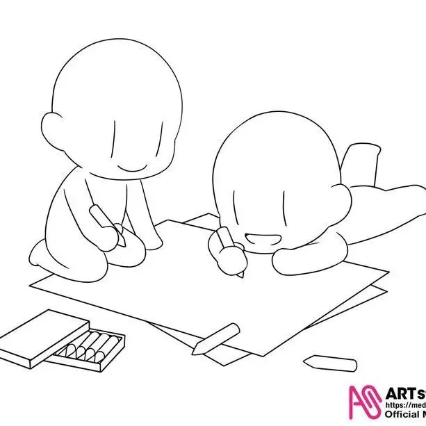
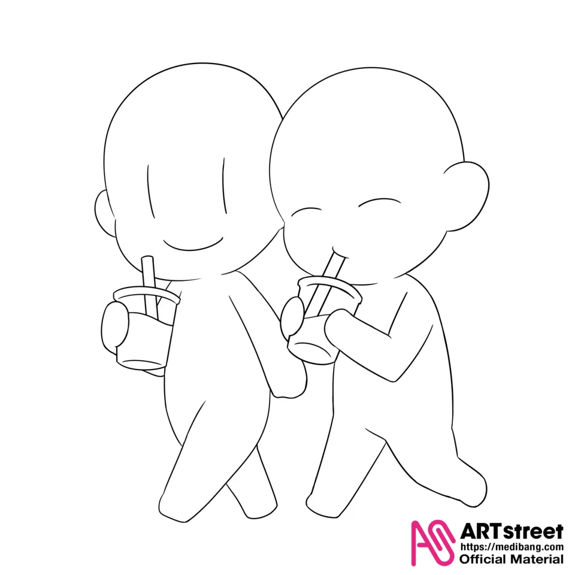
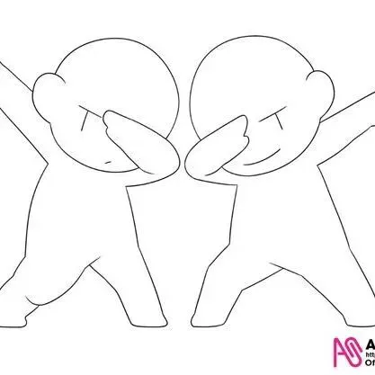
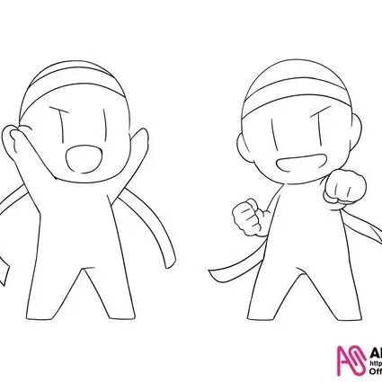
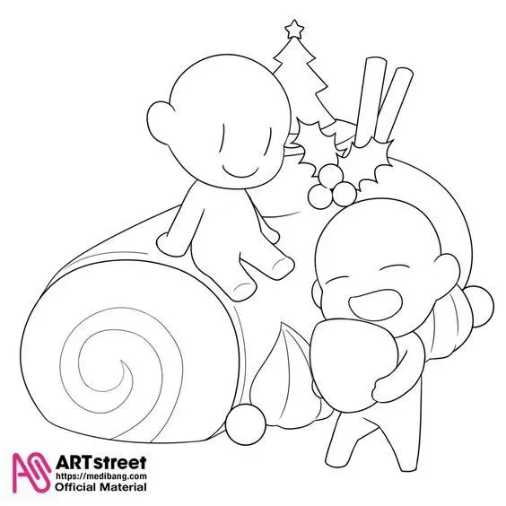
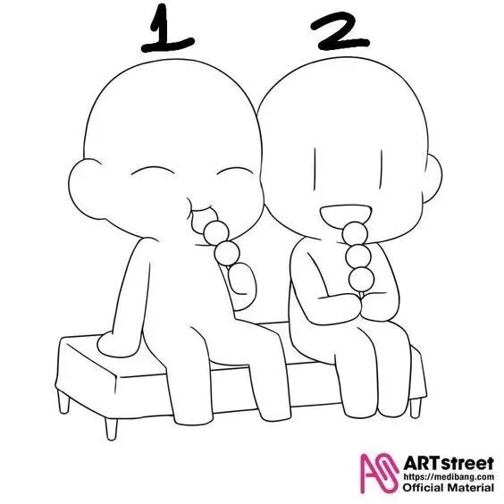
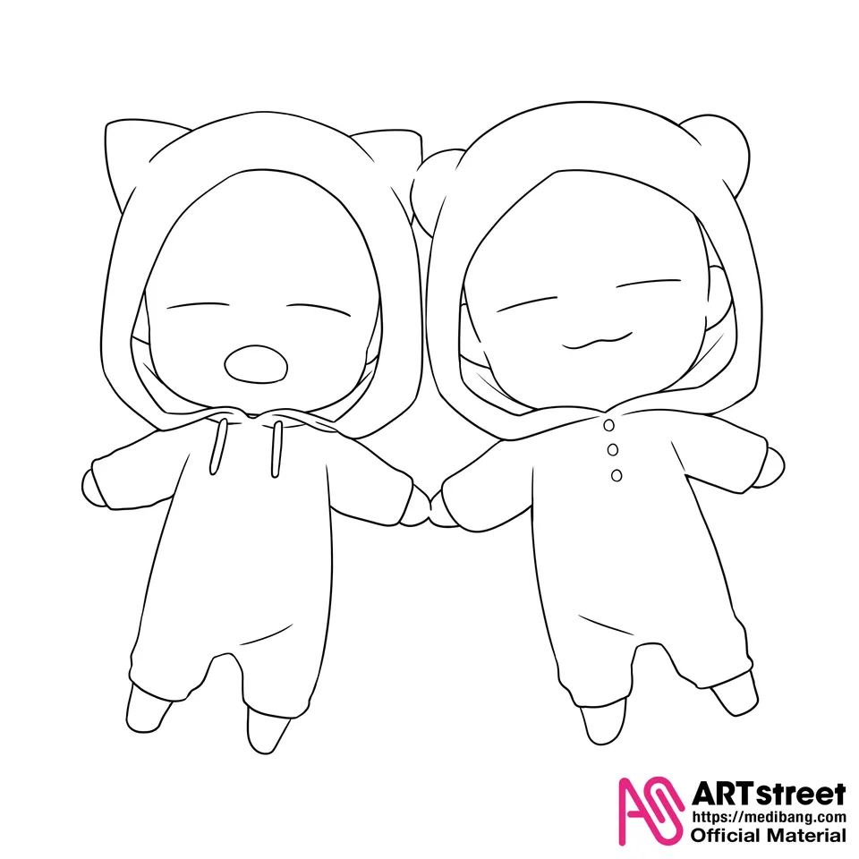
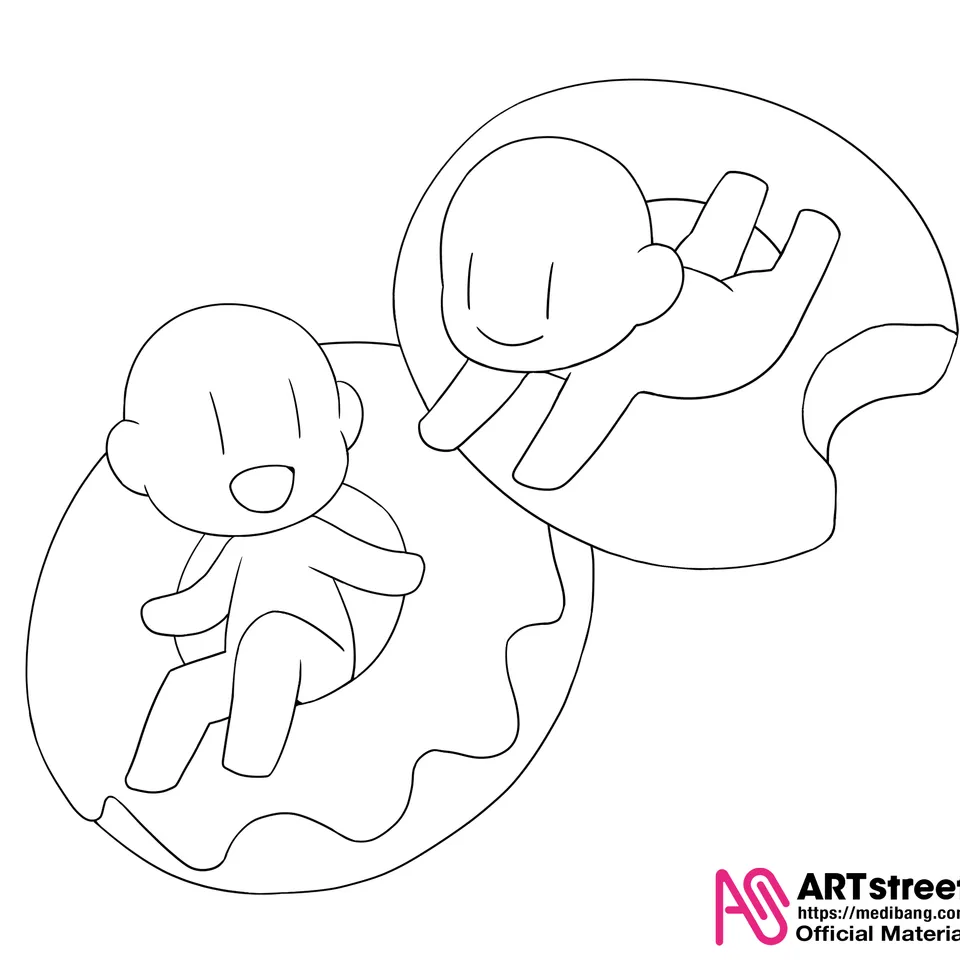
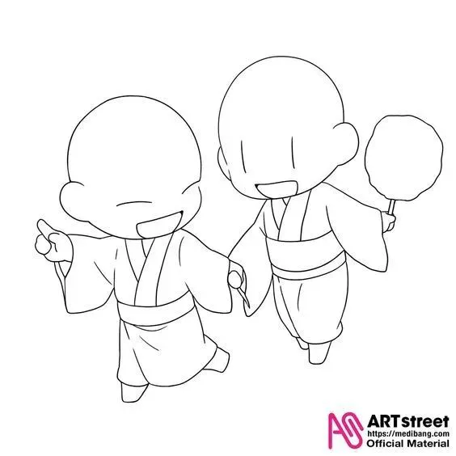
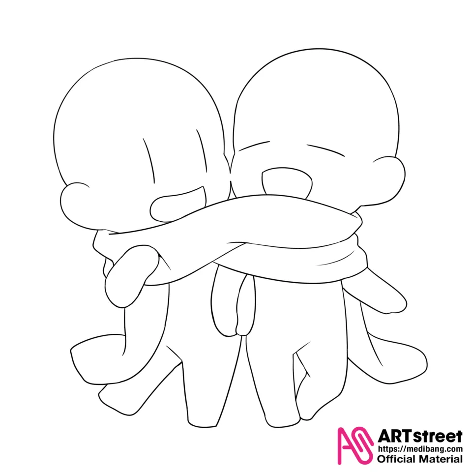
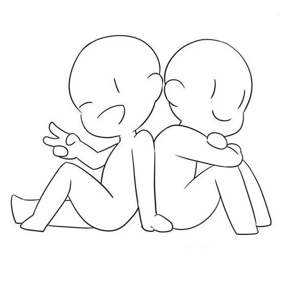
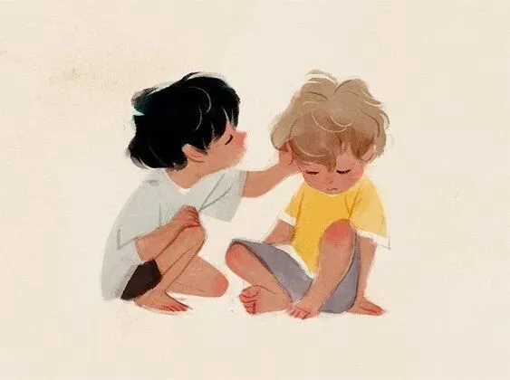